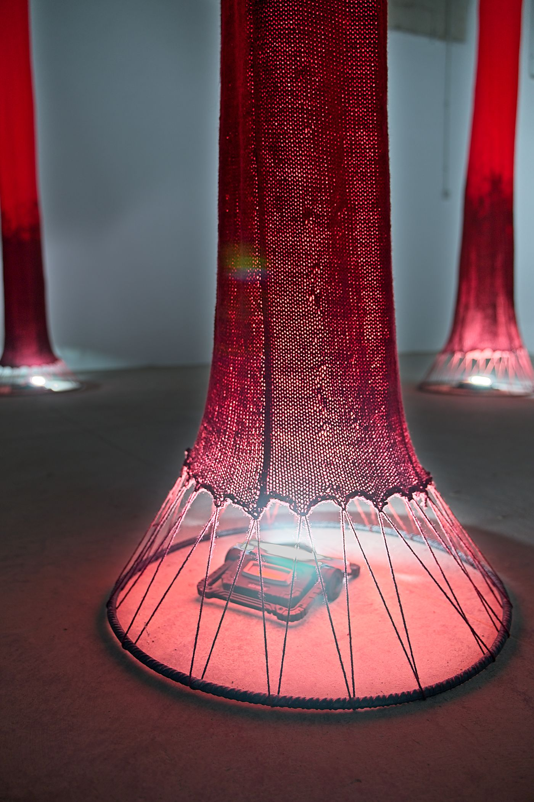
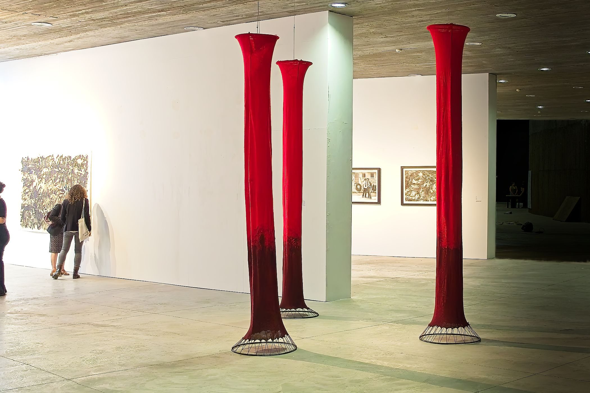
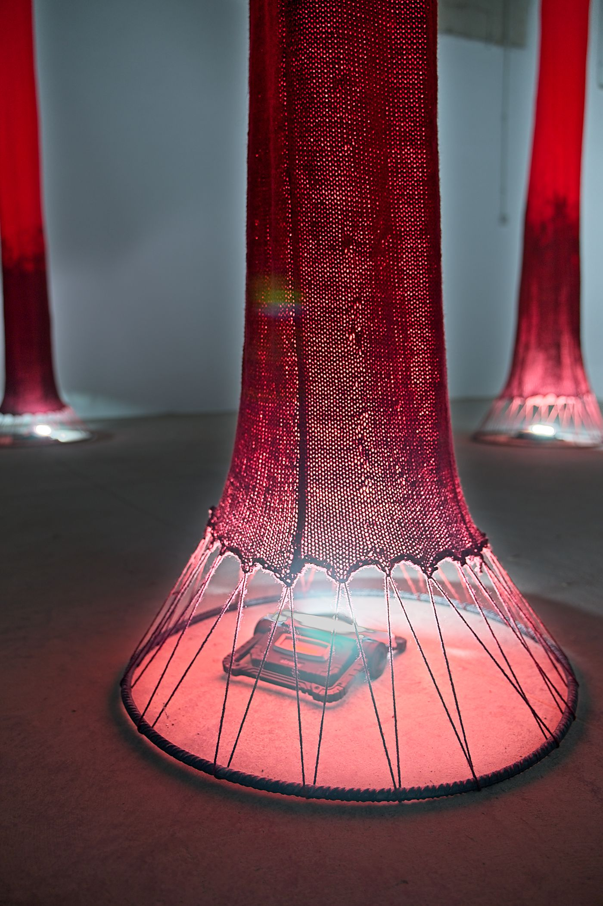
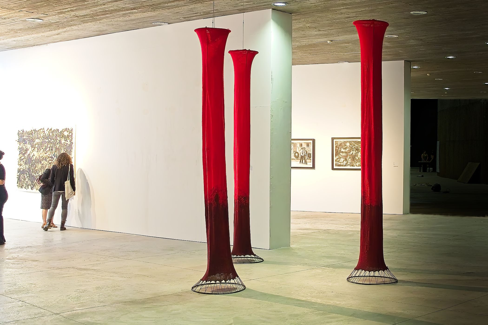

Interpolaciones
Desde mi infancia hay algo que ha estado presente, aunque no fuera consciente: elementos como fibras y telas anudan mi memoria, junto con las manos de mi abuela y madre que se movían sin descanso, enmarañando, tejiendo, hilando, creando figuras, texturas e historias en cada retal. Coser en mi casa nunca se ha visto como una tarea cotidiana, simbolizaba un acto de amor o de cuidado, ya sea hacia una misma o hacia el prójimo.
 



Mis recuerdos más vívidos son en compañia de mi abuela mientras ella tejía y me contaba historias; conforme pasaban las horas, mi imaginación volaba y veía cómo esas historias se entrelazaban con el tejido. Entre las fibras parecían abrirse mundos enteros; creaba desde cero leyendas vivas con cada punto o urdimbre. La tela, a simple vista, es solo un material carente de significado; para mí guarda una carga, un legado, unas vivencias e historias que me han sido heredadas de generación en generación. Mis mentoras siempre fueron figuras como mi abuela Rosa, mi abuela Mari Cruz, mi madre Ruth y mi tía Mari Sol. Ellas inculcaron en mí una pasión y un amor por lo textil. Es por ello que este trabajo no habla solo de mí, habla de todas nosotras.